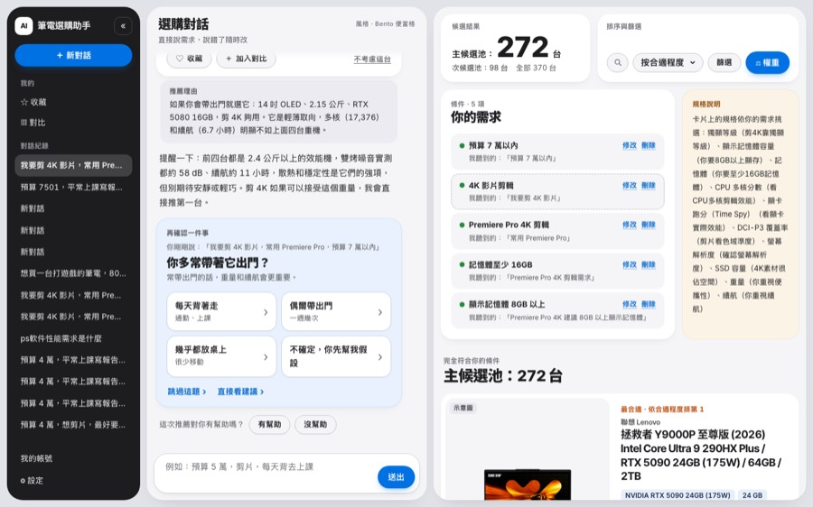
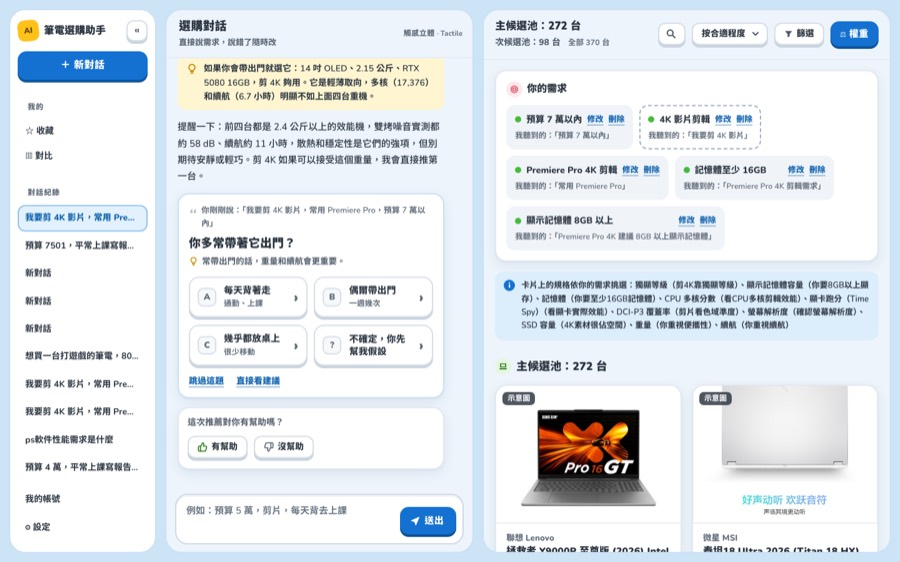
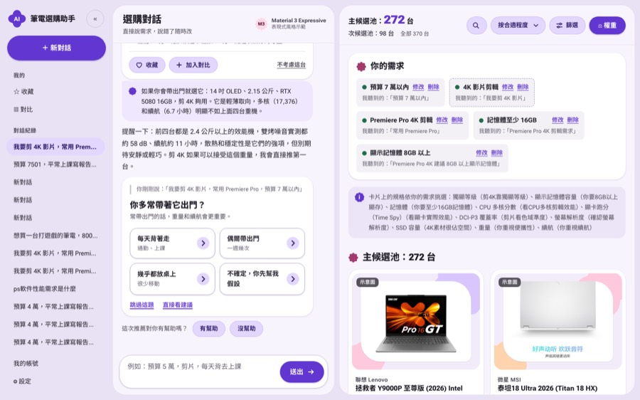
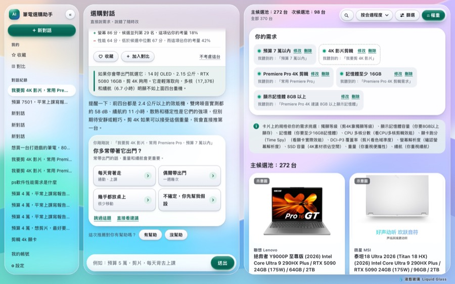
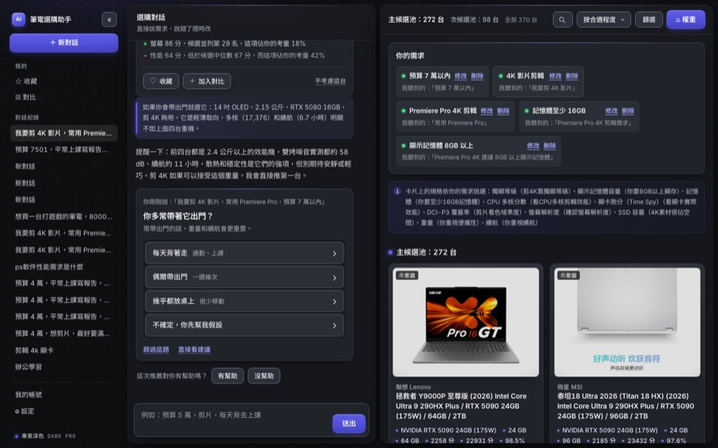
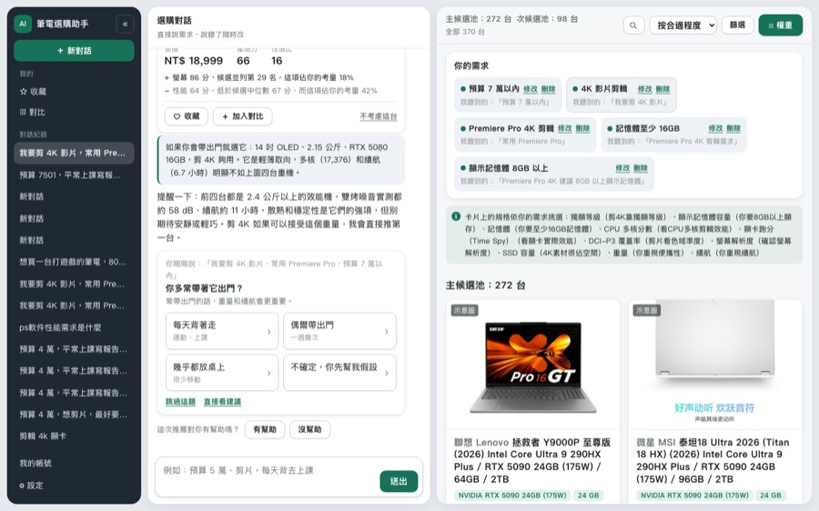

第一批的問題：按鈕不像按鈕、可點和不可點長得一樣、資訊都黏在同一個平面上。第二批改成先定「可用性底線」，再在底線上做風格。挑的都是熱門而且真的用在產品介面的設計語言。第一批在這裡。






| # | 項目 | 通過標準 |
|---|---|---|
| C1 | 主要按鈕 | ＋新對話、送出、權重：實心填色、文字對比 ≥ 4.5:1，滑過和按下都有變化 |
| C2 | 次要按鈕 | 篩選、收藏、加入對比、有幫助／沒幫助、排序、搜尋：有看得見的按鈕形狀，整頁同一級長得一樣 |
| C3 | 文字連結 | 修改、刪除、跳過這題、看全部、不考慮這台：強調色或底線 |
| C4 | 追問選項 | 像可以選的卡片，有箭頭等提示，滑過會高亮 |
| C5 | 不可點的資訊 | 規格標籤、名次、示意圖：不能像按鈕（不同時有邊框和陰影、沒有按壓效果） |
| C6 | 層次 | 背景／面板／卡片／卡內小組，靠底色差或陰影分開，不只靠細線 |
| C7 | 分組 | 同一組放在同一個容器；組和組的距離明顯大於組內 |
| C8 | 候選卡 | 照片 → 標題 → 規格 → 價格 → 動作列；價格最醒目 |
| C9 | 對比與可讀 | 所有文字對比 ≥ 4.5:1；裝飾不壓在文字上 |
| C10 | 裝飾不誤導 | 裝飾不能讓人以為可以點，也不能搶過主要資訊 |
| C11 | 風格辨識度 | 字體、形狀、質感、裝飾、動效至少 4 項有特色 |
| C12 | 手機寬度 | 400px 寬不破版，按鈕好按 |
| 風格 | 驗收發現 | 怎麼修的 |
|---|---|---|
| 專業深色 | 規格標籤和「收藏」幾乎一樣（重犯第一批問題）；層次太淡；鍵盤快捷鍵提示對購物者沒意義 | 規格改成圓點文字列表；次要按鈕加深邊框；拉大四層明暗差；快捷鍵全部拿掉 |
| 觸感立體 | 按下去沒有下沉（CSS 權重錯誤）；卡片只靠邊框分層；彩紙裝飾像標籤 | 修正權重並用真的滑鼠按壓測試；卡片加柔和陰影；拿掉彩紙 |
| Material 3 | 次候選池整張卡半透明，按鈕像不能按；粉紅色「聽到了」標籤太搶眼 | 只淡化照片；標籤改成小圓點文字；需求項目和選項做出差別 |
| 液態玻璃 | 推薦理由夾在兩張卡中間不知屬於誰；價格被標題壓過；手機角標擋按鈕 | 理由接在卡片下方成一體；價格 27px、標題降級；手機隱藏角標 |
| Bento | 次候選池把「示意圖」字也淡化了 | 只淡化照片 |
| 共用骨架 | 手機 400px 結果仍兩欄，標題擠成 5–7 行 | 560px 以下改一欄 |
| 來源 | 說明 |
|---|---|
| UI/UX Pro Max | 約 15 萬星的設計技能，風格清單含 Material 3 Expressive、Liquid Glass、Bento Grid |
| Wavespace：2026 UI 趨勢 | Liquid Glass 與 Material 3 Expressive 是兩大方向；Bento、觸感 UI 也在列 |
| Tenet：2026 UI/UX 趨勢 | 觸感、可按壓的「squishy」按鈕被列為熱門趨勢 |
| awesome-claude-design | Editorial Minimalism／Data-Dense 家族（Linear、Raycast 一類專業深色） |
所有 Demo 都是同一個畫面的靜態快照，按鈕不會真的運作；滑過、按下的效果在瀏覽器裡用滑鼠可以看到。2026-11-16